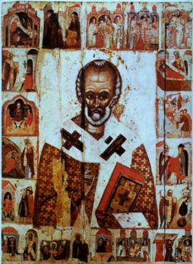

St. Nicholas Saves the Ship on His Trip to the Holy Land
From the minute Nicholas became a priest, one could
hardly keep count of the virtue and goodness he spread about him, of the nights
spent at his devotions, days of fasting, his steadfast good will, and his
prayers for all.
St. Simeon Metaphrastes
recorded that,
“Observing this, his Uncle,
the Bishop Nicholas, found the young man’s eagerness admirable. And when he
went on a pilgrimage to Jerusalem, the Bishop left Nicholas as his deputy, to
oversee the monastery he had built, and which he had called New Zion. The Saint
administered both the Bishopric and the Monastery as competently as if he had
been the Bishop himself.”
During that time, a paralytic who was so ill that he
couldn’t even raise his hand to his head, was carried by his friends to the
monastery. Nicholas anointed the paralytic with oil and prayed over him. The
sick man was healed at once.
When the bishop returned, Nicholas, in turn, asked
for his blessing for a pilgrimage to the Holy Land.
To prepare himself for this visit in an atmosphere
of serenity, he decided to travel on an Egyptian boat where no one would know
him.
During the first night of the trip, Nicholas dreamed
that the devil had come on board the boat and was cutting the ropes that held
the main mast. He interpreted this to mean that they’d run into a severe storm.
In the morning he told the sailors of this vision and warned that there was
trouble ahead. He also reassured them:
“Don’t be afraid. Trust in God because He will protect you from death.”
Nicholas had hardly finished speaking when dark
storm clouds covered the sky and the sea around the boat became turbulent.
Although they were close to the coast, the wind and water grew so violent that
it was impossible to steer it into calmer waters. Having lost control, they
pulled down all the sails.
When the main mast itself threatened to crash across
the ship, one sailor climbed it to tighten the ropes. Having finished his
dangerous task, he began his descent to the deck. The ship, however, was rocking
so forcefully back and forth in the storm that the sailor lost his footing,
fell to the deck and died. His shipmates sadly took his lifeless body below.
The wind continued to batter the boat unmercifully
and the sailors were frightened to death, literally in fear of perishing. They
begged Nicholas to pray that they might escape the storm unharmed:
“If you, O servant of God, don’t help us by your
prayers to the Lord, then we’ll immediately perish!”
Commanding them to have courage, to place their hope in God and without any doubts to expect a speedy deliverance, Nicholas began to pray fervently to the Lord. Immediately the sea became peaceful and a great calm set in. The joyful travelers rendered thanksgiving to God and His servant Nicholas and were doubly astonished – both at his predicting of the storm and the cessation of distress.
Their relief and gratitude were muted, however, by
the fate of the fellow sailor whose lifeless body had been taken below.
Nicholas – hoping to wipe out the memory of their trial completely – prayed over
the dead sailor. Quickly, and miraculously, the man was revived as if he had
only been asleep, and awakened without any pain whatever.
After this, the travelers hoisted all their sails and happily continued their voyage under favorable winds, and peacefully put in to shore at Alexandria.
When the boat reached port, Nicholas was approached
by many sick people who asked him to pray for their recovery. Following the
example of St. Peter…
“Then Peter said, ‘Silver and gold I do not have,
but what I do have I give you: In the name of Jesus Christ of Nazareth, rise up
and walk.’” (Acts 3:6 NKJV)
…Nicholas was able to restore all of them by the power of God to health before moving onward.
Having reached the ancient city of Jerusalem and
having come to Golgotha, Nicholas offered up thanksgiving to our Lord and
Savior Jesus Christ and he made the rounds of all the holy places so he could
pray at each one.
One story tells us that when he wanted to enter a
church for prayer, the closed doors of the church swung open by themselves,
disclosing an unhindered entry to him for whom were opened also the heavenly
gates.
Thought to Ponder:
Thought to Discuss around the Dinner Table:
St. Nicholas Saves the Ship on His Trip to the Holy Land
